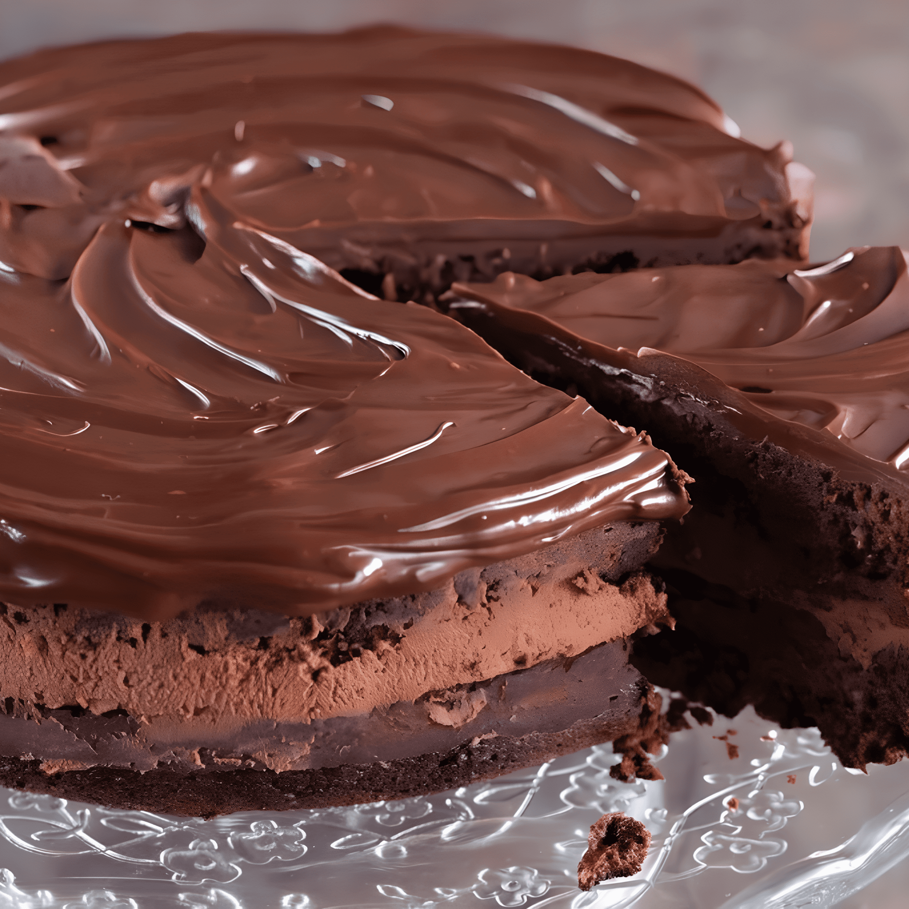

🍫Chocolate cake with mayonnaise🥛

Description
This is a very special recipe, I got this recipe from a dear trans friend (irrelevant fact: she is an entomologist), she promised she would bake it for a reunion one day, and she did. It was heavenly.
I will never forget the satisfaction I got in my face when tasting this cake, it was so moist and fudgy and delicious, definitely a recipe to be remembered. If I wasn't told, I would have never realized it has mayonnaise in it.
Dry ingredients
Flour (1 and a half cups)
Cocoa powder (1 cup)
Salt (1 teaspoon)
Baking soda (1 and a half teaspoons)
Baking powder (1/2 teaspoon)
Liquid ingredients
Dark beer (preferably stout) (1 bottle)
Vanilla extract (1 capful)
Final ingredients
Instant espresso powder (1 tablespoon)
Butter (2 sticks or 1 cup)
Sugar (1 and a half cups)
Eggs (3)
Mayonnaise (1/2 cup)
Steps
First, mix the dry ingredients together, and then the liquid ingredients separately (very important).
In a separate bowl (which will be the main bowl), cream together the butter and sugar until smooth.
Add the eggs one at a time, mixing well after each addition.
Add the mayonnaise (it won't be noticeable in the final taste, it just makes the cake creamier and allows for fewer eggs to be used).
Once the butter mixture is ready, gradually add and alternate between the dry and liquid ingredients, mixing a little at a time to ensure a good texture. The batter might be a bit liquidy; don't worry, this is normal.
(Optional) Add dark chocolate chunks for a more chocolatey flavor.
Bake at 160°C (320°F) for 35 minutes or until a toothpick inserted comes out clean. If there are still bits sticking to the toothpick, it means the cake is undercooked, or you might have hit a chocolate chunk if you added them, so check carefully.
You can use any type of frosting. I prefer a simple cream cheese frosting made by mixing cream cheese, vanilla, and powdered sugar until it reaches the desired flavor and texture. Note that frosting this cake can be tricky as it is very fluffy and can break apart easily.